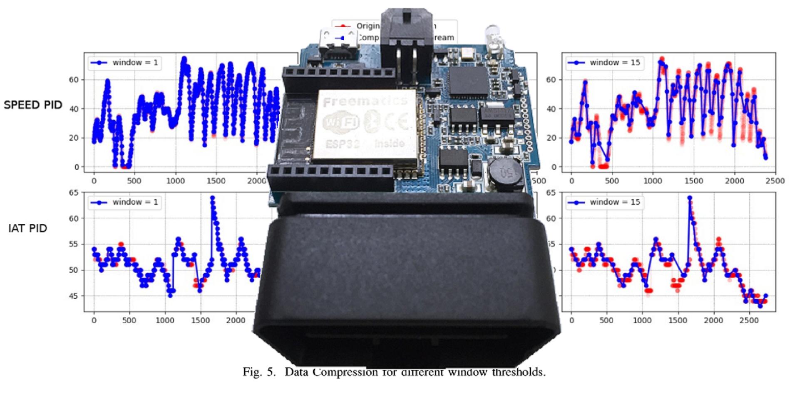

Algoritmo de Compressão
Fui pesquisador no Laboratório de Informática Industrial da UFRN, onde tive a oportunidade de
desenvolver para o dispositivo embarcado de plataforma aberta Freematics One+, que consiste numa ESP32 acoplada
a um conector OBD-II para conexão com ainjeção eletrônica de veículos modernos. Na ocasião desenvolvi um algoritmo
de compressão de dados em tempo real escrito em C, com o objetivo de viabilizar comunicações em condições de difícil
acesso de rede. O trabalho rendeu dois artigos científicos publicados em revistas internacionais pelo Institute of
Electrical and Electronics Engineers, que podem ser encontrados
aqui
e aqui.
Anterior